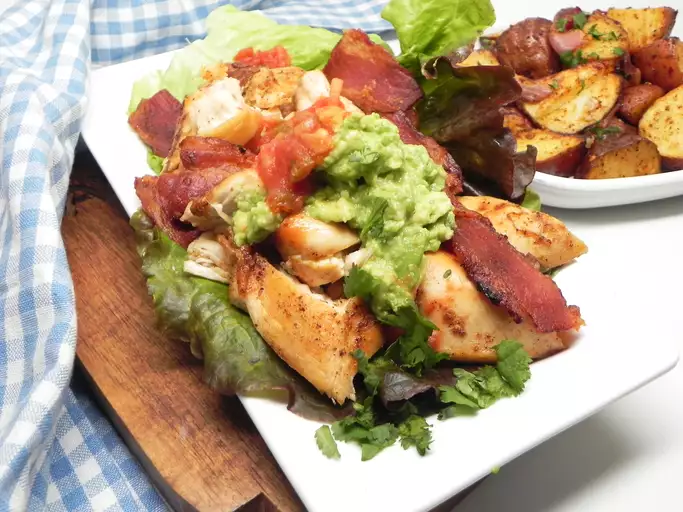

Wrap recipe

Description
This breakfast wrap will start your day off well!
Ingredients
- 2 slices bacon
- 1 chicken breast
- 1 clove garlic, minced
- 1 tomato, chopped
- 1 onion, chopped
- 2 lettuce leaves
Steps
- Place bacon in a large skillet and cook over medium-high heat, turning occasionally, until evenly browned, about 10 minutes. Drain bacon slices on paper towels, reserving grease in skillet.
- Add chicken to skillet and stir to coat with bacon drippings. Season with salt and pepper.
- Mix garlic, salt, and pepper. Add tomato and onion to taste.
- Divide cooked bacon, chicken, and sauce mixture between lettuce leaves and wrap up.
Home